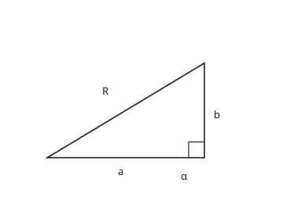

<script>if(location.hostname.endsWith('onrender.com'))location.replace('https://math-sandbox.pages.dev'+location.pathname+location.search+location.hash)</script>
<section class="theory" data-section="P23-3.5">
<h2>3.5 Expressing a sin θ + b cos θ in the form R sin(θ ± α) or R cos(θ ± α)</h2>
<p class="src">Based on Cambridge International AS &amp; A Level Mathematics: Pure Mathematics 2 &amp; 3 Coursebook, Chapter 3, printed pp.68-73. Printed pages were read from P23.pdf (printed 68-73 = PDF 80-85). Own wording and new numbers. Teaching covers Key point 3.5.</p>
<p class="key-words"><strong>Key words:</strong> <em>R-form</em></p>
<p>A linear combination \(a\sin\theta\pm b\cos\theta\) can be written in a single-sine or single-cosine form (the <strong>R-form</strong>). Expanding \(R\sin(\theta\pm\alpha)\) or \(R\cos(\theta\mp\alpha)\) and comparing coefficients gives
\[R=\sqrt{a^2+b^2},\qquad \tan\alpha=\dfrac{b}{a},\]
with \(R&gt;0\) and \(0^\circ&lt;\alpha&lt;90^\circ\) when \(a\) and \(b\) are positive. In particular,
\[a\sin\theta\pm b\cos\theta\equiv R\sin(\theta\pm\alpha),\qquad a\cos\theta\pm b\sin\theta\equiv R\cos(\theta\mp\alpha).\]</p>
<figure>

<figcaption>The value of \(R\) is the hypotenuse of a right-angled triangle with sides \(a\) and \(b\); \(\tan\alpha=b/a\).</figcaption>
</figure>
<div class="worked-example"><h4>Worked example 1</h4>
<p class="src">Book: Key point 3.5, printed pp.68-73. New integer numbers.</p>
<p>Express \(3\sin\theta+4\cos\theta\) in the form \(R\sin(\theta+\alpha)\). Write down the value of \(R\).</p>
<ol class="steps">
<li>\(R=\sqrt{3^2+4^2}=5\). <span class="mark">A1</span></li>
</ol></div>
<div class="worked-example"><h4>Worked example 2</h4>
<p class="src">Book: Key point 3.5, printed pp.68-73. New integer numbers.</p>
<p>Express \(5\sin\theta+12\cos\theta\) in the form \(R\sin(\theta+\alpha)\). Write down the value of \(R\).</p>
<ol class="steps">
<li>\(R=\sqrt{5^2+12^2}=13\). <span class="mark">A1</span></li>
</ol></div>
<h3>Common mistakes</h3><ul>
<li>Taking \(R=a+b\) instead of \(R=\sqrt{a^2+b^2}\).</li>
<li>Using \(\tan\alpha=a/b\), or giving \(\alpha\) as a value outside \(0^\circ&lt;\alpha&lt;90^\circ\).</li>
</ul>
<div class="quick-check" data-q="QC1">
<h4>Quick check 1</h4>
<p>Express \(3\sin\theta+4\cos\theta\) in the form \(R\sin(\theta+\alpha)\). Write down the value of \(R\).</p>
<details><summary>Show answer</summary>
<ol class="steps">
<li>\(R=5\). <span class="mark">A1</span></li>
</ol>
<p class="final">\(5\)</p>
</details>
</div>
<div class="quick-check" data-q="QC2">
<h4>Quick check 2</h4>
<p>Express \(5\sin\theta+12\cos\theta\) in the form \(R\sin(\theta+\alpha)\). Write down the value of \(R\).</p>
<details><summary>Show answer</summary>
<ol class="steps">
<li>\(R=13\). <span class="mark">A1</span></li>
</ol>
<p class="final">\(13\)</p>
</details>
</div>
<div class="quick-check" data-q="QC3">
<h4>Quick check 3</h4>
<p>For \(3\sin\theta+4\cos\theta\), write down the value of \(R^2\).</p>
<details><summary>Show answer</summary>
<ol class="steps">
<li>\(R^2=9+16=25\). <span class="mark">A1</span></li>
</ol>
<p class="final">\(25\)</p>
</details>
</div>
<h3>Past paper</h3>
<p class="src">9709/21/O/N/15 Question 3(i) only, 3 marks. Official QP and official MS. Part (ii) (solving an equation) is omitted. The question number was checked against the official QP.</p>
<p>Express \(8\sin\theta+15\cos\theta\) in the form \(R\sin(\theta+\alpha)\), where \(R&gt;0\) and \(0^\circ&lt;\alpha&lt;90^\circ\). Give the value of \(\alpha\) correct to 2 decimal places. [3]</p>
<details><summary>Show official scheme</summary>
<ol class="steps">
<li>\(R=17\). Official MS: B1, state or imply \(R=17\). <span class="mark">B1</span></li>
<li>Use an appropriate formula to find \(\alpha\). Official MS: M1. <span class="mark">M1</span></li>
<li>\(\alpha=61.93\). Official MS: A1. <span class="mark">A1</span></li>
</ol></details>
</section>
